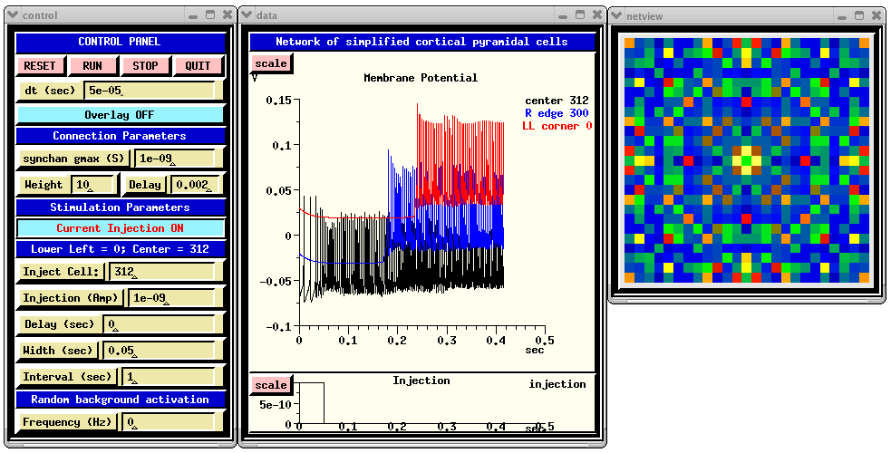
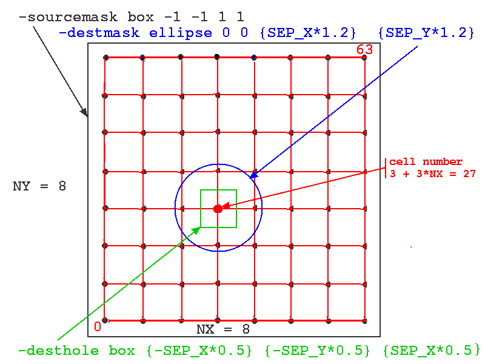

Next: Where do we go from here? Previous: Making synaptic connections Up: Table of Contents
Now that we know how to make models of single neurons, and to make simple circuits of synaptically-connected neurons, it's time to get the next step in "modelimg the brain" -- creating large networks of biologically realistic neurons, connected according to our best knowledge from physiology.
The procedure for constructing of large networks with GENESIS is covered in BoG Chapter 18. This chapter gives detailed descriptions for using the various options of the network creation commands that are summarized in the GENESIS Reference Manual section on Synaptic Connections. The WAM-BAMM 2005 Advanced Tutorial on Constructing Large-scale Network Models at http://www.wam-bamm.org/WB05/Tutorials provides some good advice on the issues encountered, and describes the process of constructing biologically realistic large networks of neurons. It uses examples taken from an improved "next-generation" model of the piriform cortex.
The chapter in the BoG uses examples from the venerable genesis/Scripts/orient_tut simulation, a very simple model of orientation selectivity, involving two layers of cells.
This tutorial uses a somewhat simpler example, consisting of a grid of simplified neocortical regular spiking pyramidal cells, each one coupled with excitory synaptic connections to its four nearest neighbors. This might model the connections due to local association fibers in a cortical network. The example simulation, in the networks/RSnet directory, was designed to be easily modified to allow you to use other cell models, implement other patterns of connectivity, or to augment it with a population of inhibitory interneurons and the several other types of connections in a cortical network.
You may examine the cell model itself, and explore its response to different types of inputs by running and examining the scripts in the cells/RScell directory, and the README file. This is a very simple one-compartment model that, like the exercise in Building a cell the easy way, uses a Muscarinic potassium current (KM) in order to achieve spike frequency adaption. This model, based on a paper and simulation by Destexhe et al. (2001), uses channels that give more realistic firing patterns than those in our exercise. The simplicity of this cell model allows our example network of 625 neurons to run fairly quickly.
But, it is important to note that single-compartment models with only these three ionic conductances have limitations. Although the KM current may play a role in spike frequency adaption of cortical pyramidal cells, the behavior of these cells is largely determined by calcium currents and at least two varieties of calcium-activated potassium currents. You may explore some more realistic cortical pyramidal cell models by running the simulations in the cells/corticalcells directory. The genesis/Scripts/traub91 tutorial demonstrates the effects of these currents in burst-firing hippocampal pyramidal cells. For more on this subject, you can follow the detour:
Detour: Making more realistic cell models
Before we dissect the RSnet.g script, let's look at the simulation and its GUI. As with the scripts for RScell and simplecell2, the main script and the GUI (in graphics.g) were designed as fairly general templates that you can modify to experiment with your own network and cell models. It can be customized for another cell by changing strings that are defined in the main script.
When you run RSnet.g with the default parameters, you will see something like:

The CONTROL PANEL allows injection pulses to be applied to a selected cell in the network and/or random synaptic activation to be applied to each cell. The latter is done by setting the 'Frequency' dialog box to a non-zero value. This sets the frequency field of each synchan to the given value. The injection may be turned on and off by clicking on the 'Current Injection ON/OFF' toggle. Under 'Connection Parameters', 'synchan gmax' is used to set the gmax field of the synchan of each cell. The 'Weight' parameter acts as a multiplier of gmax for connections to the cells, but not for the random activation. Thus, the amplitude of the of the random synaptic input can be increased or decreased relative to the network synaptic input by appropriate scaling of 'synchan gmax' and 'Weight'.
The 'Delay' dialog is for setting the fixed axonal delay of each synchan to the same value. Comments in RSnet.g explain how to use a conduction velocity instead, to scale the delay according to the distance between cells.
You can explore the connections that are made by invoking the synapse_info function at the genesis prompt. This function is defined, with further explanation, in the file synapseinfo.g, which is included by RSnet.g. For example,
genesis #5 > synapse_info /network/cell[312]/soma/Ex_channel synapse[0] : src = /network/cell[287]/soma/spike weight =10 delay =0.002 synapse[1] : src = /network/cell[311]/soma/spike weight =10 delay =0.002 synapse[2] : src = /network/cell[313]/soma/spike weight =10 delay =0.002 synapse[3] : src = /network/cell[337]/soma/spike weight =10 delay =0.002The 'Membrane Potenial' plot shows Vm for the center cell soma, and that for ones on the right edge and lower left corner. Each of these additional plots is displaced vertically from the others by 0.05 V, for easier viewing.
The function make_netview, defined in graphics.g, illustrates the use of the xview widget to display the Vm of each cell on the grid, using a cold to hot colorscale. To speed up the simulation somewhat, the line that invokes this function may be commented out.
There are five steps to constructing the network. Each of these is described in a corresponding commented section of RSnet.g.
Here are the statements used in RSnet.g for each of these steps:
Step 1: Assemble the components to build the prototype cell under the neutral element /library, all of this is done in the protodefs.g file, which is similar to those used in making the prototypes used for single cell models:
include protodefs.g // This creates /library with the cell components
Step 2: Create the prototype cell specified in RScell.p, using readcell. Then, set the maximal conductance of the excitatory synchan in the appropriate compartment, and the threshold and absolute refractory period of the spikegen that is attached to the soma.
readcell RScell.p /library/cell
setfield /library/cell/soma/Ex_channel gmax {gmax}
setfield /library/cell/soma/spike thresh 0 abs_refract 0.004 output_amp 1
In this case, the synchan is in the soma compartment, with the maximal conductance specified in the variable 'gmax'. A spike will be generated when Vm exceeds a voltage of zero, unless one has previously been genereated within the last 4 msec.
Step 3: Make a two-dimensional array of cells with copies of /library/cell.
createmap /library/cell /network {NX} {NY} -delta {SEP_X} {SEP_Y}
The usage of the createmap command is
createmap source dest Nx Ny -delta dx dy [-origin x y]
There will be NX cells along the x-direction, separated by SEP_X, nd NY cells along the y-direction, separated by SEP_Y. The default origin is (0, 0). This will be the coordinates of cell[0]. The last cell, cell[{NX*NY-1}], will be at (NX*SEP_X -1, NY*SEP_Y-1).
In this example simulation, SEP_X and SEP_Y are set to 0.001 m. Cortical networks typically have pyramidal cell separations on the order of 10 micrometers, and have pyramidal cell axonal projections of up to a millimeter. With these separations, a 25 by 25 grid of neurons would be only 0.25 mm on a side. By using an artificially large value of 1 mm for the separations, the model can represent a cortical area of about an inch on a side. In this case, the neurons in the model are a sparse sample of the those in the actual network, and each one of them represents many in the biological network. To compensate for this, the conductance of each synapse is scaled by a synaptic weight factor, to represent the increased number of neurons that would be providing input in the actual network. The large separation value used in this example would be appropriate for a piriform cortex model with long range connections between cells.
Step 4: Now connect them up, using the planarconnect command. This command establishes synaptic connections between groups of elements based on the x-y positions of the elements. It does this by by adding SPIKE messages between source and destination elements, using a large number of options to specify just which ones are to be included. Although this makes the syntax somewhat complex, it allows a wide variety of patterns of connections. The usage is of the form
planarconnect source-path destination-path
[-relative]
[-sourcemask {box,ellipse} xmin ymin xmax ymax]
[-sourcehole {box,ellipse} xmin ymin xmax ymax]
[-destmask {box,ellipse} xmin ymin xmax ymax]
[-desthole {box,ellipse} xmin ymin xmax ymax]
[-probability p]
These options are described in more detail in Chapter 18 of the BoG, and the documentation for planarconnect.
In this simulation, we want to connect each source spike generator to the excitatory synchans on the four nearest neighbors. To do this, we define the sourcemask to be a rectangle (box) with a very large range (-1 to +1 meters!), so that every cell in the network will be treated as a source. We want the destination, relative to the source to be an ellipse (or circle) that is large enough to include the four neighbors. It is generally a good idea to set the destmask ellipse axes or box size somewhat higher than the cell spacing, to be sure that the cells are included. Although this isn't a problem with our single-compartment cell, it can be an issue if the destination synapses are located in a distal dendrite compartment that is displaced by some amount from the cell origin. We also want to define a "destination hole" region that excludes the source cell, so that it doesn't connect to itself. This is implemented in RSnet.g with the statement:
planarconnect /network/cell[]/soma/spike /network/cell[]/soma/Ex_channel \
-relative \ // Destination coordinates are measured relative to source
-sourcemask box -1 -1 1 1 \ // Larger than source area -> all cells
-destmask ellipse 0 0 {SEP_X*1.2} {SEP_Y*1.2} \
-desthole box {-SEP_X*0.5} {-SEP_Y*0.5} {SEP_X*0.5} {SEP_Y*0.5} \
-probability 1.1 // set probability > 1 to connect to all in destmask
The figure below illustrates how these options would be applied to a network of 64 cells with NX = NY = 8. The particular source cell for the connections shown (one of all in the sourcemask, i.e. all of cells) is number 3 + 3*NX = 27.

Note the use of the wildcard notation 'cell[]' to indicate all indices of the cell objects. Here, the 'desthole' could just as well have been an ellipse. The variables SEP_X and SEP_Y had previously been set to the desired spacing between cells, 0.001 meters.
To connect to nearest neighbors and the 4 diagonal neighbors, we would use a box for the destmask:
-destmask box {-SEP_X*1.01} {-SEP_Y*1.01} {SEP_X*1.01} {SEP_Y*1.01}
For all-to-all connections with a 10% probability, set both the sourcemask and the destmask to have a range much greater than NX*SEP_X using options
-destmask box -1 -1 1 1
-probability 0.1
Step 5: Set the axonal propagation delay and weight fields of the target synchan synapses, for all spikegens, to the values previously defined for 'prop_delay' and syn_weight':
planardelay /network/cell[]/soma/spike -fixed {prop_delay}
planarweight /network/cell[]/soma/spike -fixed {syn_weight}
To scale the delays according to distance instead of using a fixed delay, use
planardelay /network/cell[]/soma/spike -radial {cond_vel}
and change the dialogs in graphics.g to set 'cond_vel'. This would be appropriate when connections are made to more distant cells.
Other options described in the documentation for planardelay and planarweight allow some randomized variations in the delay and weight, to make a more realistic simulation of a biological network. There are also three-dimensional equivalents to these coommands, called volumeconnect, volumedelay, and volumeweight. The setrandfield command is useful for for randomizing fields in a cell compartment or channel according to a specified distribution. When used with passive cell parameters or resting potentials, this can allow a more natural variation in the cells composing the network.
The GENESIS Reference Manual section on Objects describes several "Device Objects" that can be used for spike train analysis:
autocorr Calculates histograms of auto-correlations crosscorr Calculates histograms of cross-correlations freq_monitor calculates running event (spike) frequency interspike Generates an interspike interval histogram peristim Generates a peristimulus spike histogram event_tofile Records event times; e.g spikes or threshold crossings
These objects can be used to generate histograms for analysis of spike trains. More details can be found in the documentation for these objects, and in the example script in the genesis/Scripts/examples/spike/ directory. There is a good introductory tutorial on the the use of statistical correlation functions to analyze spike train data at http://mulab.physiol.upenn.edu/analysis.html.
The behavior of this network is affected by "edge effects", because the cells on the edges have fewer connections. Periodic boundary conditions are often used with small networks in order to approximate the behavior of a network of infinite size. Modify the connections in the RSnet example so that each cell on an edge is connected to the corresponding cell on the opposite edge. Is the behavior different from that of the original version with "open boundary conditions"?
The example script in genesis/Scripts/examples/fileconnect gives an example of reading in a network connection matrix from a file with the fileconnect command.
If you would like to experiment with models having spike timing dependent plasticity, see the documentation for the hebbsynchan and facsynchan objects, and the examples in the GENESIS Scripts/examples directory. The "Libraries" section of user contributions at the GENESIS web site also contains the stdpSynchan object, a synchan with spike-timing-dependent plasticity (STDP).
The networks/synfirenet directory contains an example of a different type of network connectivity, the synfire chain. These scripts were developed by Dieter Jaeger as as an exercise in script programming of networks, and the scripts were designed to be easily modified. The network model also allows Hebbian learning. The main script is netsim.g. The GUI lets you experiment with the model, and the HELP menu offers suggestions on ways to modify the model. The README file explains about synfire chains and the details of this model.
More realistic cortical cell models tend to have a more pronounced hyperpolarization after the action potentials and a "more absolute" refractory period. This makes it possible to have propagating rings of activation generated by injection pulses, rather than continuous firing, as in this model. (For example, see Kudela et al. 1999). Modify the RSnet simulation to use the more detailed BDK5cell neocortical pyramidal model from the cells/corticalcells directory, and see if you can produce this effect. What effect does the propagation delay have on the waves? The detour on Making more realistic cell models gives more suggestions for constructing realistic neuron models.
What is the effect of using even simpler neuron models in the same network? The iznet.g script in the GENESIS Scripts/examples/izcell directory is a variation of the RSnet model, using the Izhikevich (2003) simple spiking neuron model. Can it be "tuned" to produce the same network behaviors as the networks with more complex neurons? (This requires GENESIS 2.3 or later.)
Another 'exercise for the reader' would be to use the GENESIS parameter search routines to vary the RScell parameters, in order to create a cell that more closely duplicates the current injection behavior seen in a specific set of experimental data. Then compare the two models when used in a network.
Of course, a realistic cortical network will have a large number of inhibitory connections, mediated by interneurons that receive excitatory inputs and then make inhibitory connections to pyramidal cells. The lack of inhibition in this example network is responsible for the fact that, once a wave of excitation begins to propagate, the cells are firing near their maximum frequency and, as seen in the 'Membrane Potenial' plot, the amplitude of the action potentials is somewhat reduced because of this overstimulation. Inhibitory interneurons are generally of the "Fast Spiking" category, with little or no spike frequency adaptation, such as the simplecell model that we examined previously. Try adding a layer of these cells to the network, and make suitable excitatory connections to them from the RScells, and connections from them to inhibitory synchans in the RScells. The well documented network model in networks/Vogels-Abbot_net implements the Vogels and Abbott (2005) model using single compartment neurons with Hodgkin-Huxley dynamics, instead of integrate and fire neurons. This simple network has random connections between populations of excitatory and inhibitory cells. Although this is not a very biologically realistic model, the documentation and comments in the scripts describe many options to modify the network connectivity and to incorporate more realistic cell models.
This July 2014 update of the tutorials package has two recent variations on the Vogels and Abbott model. The networks/VAnet simulation serves as a tutorial on using hsolve with network models in order speed up simulations by factors of ten to twenty. The networks/ACnet2-GENESIS simulation is a study of cortical waves in primary auditory cortex that evolved from the models used in this tutorial.
The cells/FScell directory contains a simple fast spiking cell simulation, similar to the ones in cells/simplecell and cells/simplecell2. Alternatively, a fast fast spiking cell could be created from the RScell model by removing the muscarinic current.
The classic "Synaptic Organization of the Brain" (Shepherd, 2003) contains multi-authored reviews of our current understanding of the "wiring diagrams" of different portions of the brain. Binzegger et al. (2004) give a detailed quntitative analysis of the connections in primary visual cortex. More information on the statistics of the distribution of local connections between cortical pyramidal cells can be found in Holmgren et al. (2003), who measured pyramidal-pyramidal and pyramidal-interneuron connection probablilites in layer 2/3 as a function of distance, and in Thomson and Bannister (2003), who presented a review of local interlaminar connections.
Binzegger,T., Douglas,R.J., and Martin,K.A. (2004). A quantitative map of the circuit of cat primary visual cortex. J Neurosci 24, 8441-8453.
Destexhe, A. and Par, D. (1999) Impact of network activity on the integrative properties of neocortical pyramidal neurons in vivo. Journal of Neurophysiology 81: 1531-1547.
Destexhe, A., Rudolph, M., Fellous, J. M. and Sejnowski, T. J. (2001) Fluctuating synaptic conductances recreate in-vivo-like activity in neocortical neurons. Neuroscience 107: 13-24.
Holmgren C, Harkany T, Svennenfors B, Zilberter Y. (2003) Pyramidal cell communication within local networks in layer 2/3 of rat neocortex. J. Physiol. 551: 139-153.
Izhikevich, E. M. (2003) Simple Model of Spiking Neurons. IEEE Transactions on Neural Networks 14:1569-1572.
Kudela, P., Franaszczuk P.J., and Bergey, G. K. (1999) Model of the propagation of synchronous firing in a reduced neuron network. Neurocomputing 25-27: 411-418.
Shepherd, G. M. (2003) The Synaptic Organization of the Brain, 5th edition, Oxford University Press, NY.
Thomson, A.M. and Bannister, A.P. (2003). Interlaminar Connections in the Neocortex. Cereb.Cortex (13) 5-14.
Vogels TP, Abbott LF. (2005) Signal propagation and logic gating in networks of integrate-and-fire neurons. J. Neurosci. 25: 10786-10795.
Once you begin creating large network models, you will want to run even larger models in less time. As computers are reaching the practical limit of CPU speed, it is becoming more common to use multicore processors that effectively turn a PC into a parallel computer. As of mid-2008, it was possible to buy a PC with a quad core CPU for under $1000, and eight core processors will be available in year or two. This offers the prospect of harnessing this power by using PGENESIS under Linux to turn an inexpensive PC into a fast parallel computer for running large GENESIS network simulations.
The Mini-tutorial on Using Parallel GENESIS on PCs with Multicore Processors tells you what you need to know to get PGENESIS running under the MPI environment on PCs with Linux.
Once you have PGENESIS installed, you are ready to try out a parallel version of the RSnet simulation, and to use the tutorial Converting large network simulations to PGENESIS. This analyzes the differences between RSnet and the parallel version par-RSnet in order to explain the steps needed to parallelize a network simulation that was developed for serial GENESIS.
In these examples, the value of the synaptic weight has been held fixed. In any biological cortical network, the response of cells to synaptic inputs varies with time. The tutorial on Implementing synaptic plasticity describes how phenomena such as long term potentiation and depression (LTP and LTD) may be efficiently implemented in GENESIS.
Now you have the tools to begin "modeling the brain". The final section of this tutorial "Where do we go from here?" points you towards some information about other useful GENESIS features that we haven't yet discussed.